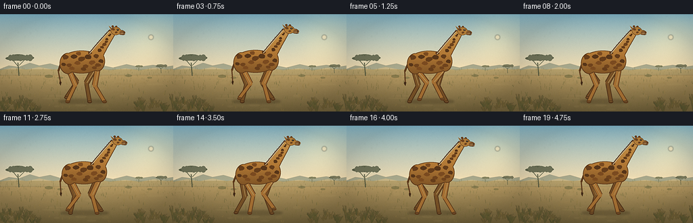
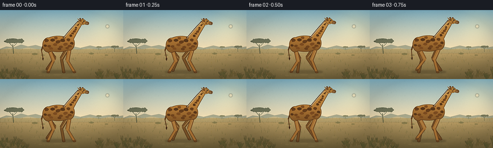

CODING AGENTS AS PIXEL WORLD MODELS
traex/DeepSeek-V4.1-Flash · instance_preservation_0010
点击播放 · 原生 RGB 像素
逐轮保存的候选
回放视频、检查图与代码变化。
每份候选均可单独播放。实际图片检查记录在下方工具轨迹中。
候选 01播放与检查图
点击播放 · 原生 RGB 像素


展开代码变化
--- 上一保存版本
+++ 本次保存版本
@@ -0,0 +1,706 @@
+from __future__ import annotations
+
+import math
+import random
+from pathlib import Path
+
+import numpy as np
+from PIL import Image, ImageChops, ImageDraw, ImageFilter
+
+import artifact_io
+
+
+WIDTH = 256
+HEIGHT = 144
+FPS = 4.0
+FRAME_COUNT = 20
+SUPERSAMPLE = 4
+CW = WIDTH * SUPERSAMPLE
+CH = HEIGHT * SUPERSAMPLE
+
+
+def s(value: float) -> int:
+ return int(round(value * SUPERSAMPLE))
+
+
+def pt(point: tuple[float, float]) -> tuple[int, int]:
+ return s(point[0]), s(point[1])
+
+
+def box(values: tuple[float, float, float, float]) -> tuple[int, int, int, int]:
+ return tuple(s(value) for value in values)
+
+
+def mix(a: tuple[float, float, float], b: tuple[float, float, float], amount: float):
+ return tuple(a[i] + (b[i] - a[i]) * amount for i in range(3))
+
+
+def lerp(a: float, b: float, amount: float) -> float:
+ return a + (b - a) * amount
+
+
+def cubic_bezier(p0, p1, p2, p3, amount: float):
+ inv = 1.0 - amount
+ return (
+ inv**3 * p0[0] + 3 * inv**2 * amount * p1[0] + 3 * inv * amount**2 * p2[0] + amount**3 * p3[0],
+ inv**3 * p0[1] + 3 * inv**2 * amount * p1[1] + 3 * inv * amount**2 * p2[1] + amount**3 * p3[1],
+ )
+
+
+def make_background() -> Image.Image:
+ yy, xx = np.mgrid[0:CH, 0:CW]
+ y_final = yy / SUPERSAMPLE
+ horizon = 81.5
+
+ sky_top = np.array([122.0, 176.0, 197.0])
+ sky_low = np.array([236.0, 215.0, 172.0])
+ ground_top = np.array([194.0, 163.0, 104.0])
+ ground_low = np.array([107.0, 91.0, 52.0])
+
+ sky_u = np.clip(y_final / horizon, 0.0, 1.0) ** 0.78
+ ground_u = np.clip((y_final - horizon) / (HEIGHT - horizon), 0.0, 1.0) ** 0.82
+ image = np.empty((CH, CW, 3), dtype=np.float32)
+ for channel in range(3):
+ image[:, :, channel] = np.where(
+ y_final < horizon,
+ sky_top[channel] + (sky_low[channel] - sky_top[channel]) * sky_u,
+ ground_top[channel] + (ground_low[channel] - ground_top[channel]) * ground_u,
+ )
+
+ sun_x, sun_y = 223.0 * SUPERSAMPLE, 34.0 * SUPERSAMPLE
+ radius = 28.0 * SUPERSAMPLE
+ glow = np.exp(-((xx - sun_x) ** 2 + (yy - sun_y) ** 2) / (2.0 * radius**2))
+ image += glow[:, :, None] * np.array([34.0, 25.0, 10.0])
+ haze = np.exp(-((yy - horizon * SUPERSAMPLE) / (5.0 * SUPERSAMPLE)) ** 2)
+ image += haze[:, :, None] * np.array([8.0, 8.0, 5.0])
+
+ rng = np.random.default_rng(74)
+ broad_noise = rng.normal(0.0, 1.0, (CH // 8, CW // 8)).astype(np.float32)
+ broad_noise = np.asarray(
+ Image.fromarray(((broad_noise - broad_noise.min()) / 3.8 + 0.5).clip(0, 1) * 255).resize(
+ (CW, CH), Image.Resampling.BICUBIC
+ ),
+ dtype=np.float32,
+ )
+ image += (broad_noise[:, :, None] - 128.0) * 0.045
+ fine_noise = rng.normal(0.0, 1.0, (CH, CW, 1)).astype(np.float32)
+ image += fine_noise * 1.6
+ image = np.clip(image, 0, 255).astype(np.uint8)
+ canvas = Image.fromarray(image, "RGB").convert("RGBA")
+
+ sun_layer = Image.new("RGBA", canvas.size, (0, 0, 0, 0))
+ sun_draw = ImageDraw.Draw(sun_layer)
+ sun_draw.ellipse(box((219.5, 30.5, 226.5, 37.5)), fill=(255, 239, 196, 185))
+ sun_layer = sun_layer.filter(ImageFilter.GaussianBlur(s(0.7)))
+ canvas = Image.alpha_composite(canvas, sun_layer)
+
+ ridges = Image.new("RGBA", canvas.size, (0, 0, 0, 0))
+ ridge_draw = ImageDraw.Draw(ridges)
+ far_ridge = [
+ (0, 81), (13, 76), (28, 78), (44, 72), (58, 76), (74, 73),
+ (91, 78), (110, 74), (128, 79), (148, 75), (167, 79), (187, 74),
+ (205, 78), (226, 75), (243, 78), (256, 76), (256, 87), (0, 87),
+ ]
+ ridge_draw.polygon([pt(point) for point in far_ridge], fill=(139, 147, 124, 180))
+
+ near_ridge = [
+ (0, 83), (20, 79), (39, 82), (58, 78), (79, 82), (99, 79),
+ (119, 83), (142, 79), (162, 83), (185, 80), (207, 83), (228, 79),
+ (246, 82), (256, 81), (256, 90), (0, 90),
+ ]
+ ridge_draw.polygon([pt(point) for point in near_ridge], fill=(169, 153, 106, 150))
+ ridges = ridges.filter(ImageFilter.GaussianBlur(s(0.35)))
+ canvas = Image.alpha_composite(canvas, ridges)
+
+ texture = Image.new("RGBA", canvas.size, (0, 0, 0, 0))
+ draw = ImageDraw.Draw(texture)
+ detail_rng = random.Random(2187)
+
+ # Warm and cool patches keep the open plain from reading as a flat fill.
+ for _ in range(55):
+ x = detail_rng.uniform(-8, 264)
+ y = detail_rng.uniform(84, 142)
+ width = detail_rng.uniform(7, 32)
+ height = detail_rng.uniform(1.2, 4.5)
+ tone = detail_rng.choice(((174, 139, 78), (134, 113, 61), (203, 174, 111)))
+ draw.ellipse(box((x - width / 2, y - height / 2, x + width / 2, y + height / 2)), fill=(*tone, 20))
+
+ # Distant grass gives the horizon a soft, fibrous edge.
+ for _ in range(260):
+ x = detail_rng.uniform(0, WIDTH)
+ y = detail_rng.uniform(81, 101)
+ length = detail_rng.uniform(1.2, 3.8)
+ tone = detail_rng.choice(((103, 101, 57), (126, 115, 62), (161, 136, 75)))
+ draw.line([pt((x, y)), pt((x + detail_rng.uniform(-0.6, 0.6), y - length))], fill=(*tone, 115), width=s(0.5))
+
+ for _ in range(120):
+ x = detail_rng.uniform(0, WIDTH)
+ y = detail_rng.uniform(101, 143)
+ length = detail_rng.uniform(2.0, 6.5)
+ lean = detail_rng.uniform(-1.8, 1.8)
+ tone = detail_rng.choice(((88, 91, 48), (113, 104, 52), (150, 125, 63)))
+ draw.line([pt((x, y)), pt((x + lean, y - length))], fill=(*tone, 120), width=s(0.65))
+
+ canvas = Image.alpha_composite(canvas, texture)
+
+ def draw_acacia(draw, x, ground_y, scale, color):
+ trunk_top = (x - 1.2 * scale, ground_y - 16.5 * scale)
+ draw.line(
+ [pt((x, ground_y)), pt(trunk_top)],
+ fill=(*color, 205),
+ width=max(1, s(1.35 * scale)),
+ )
+ draw.line(
+ [pt((x - 0.2 * scale, ground_y - 11 * scale)), pt((x - 8 * scale, ground_y - 20 * scale))],
+ fill=(*color, 190),
+ width=max(1, s(0.85 * scale)),
+ )
+ draw.line(
+ [pt((x - 0.1 * scale, ground_y - 13 * scale)), pt((x + 9 * scale, ground_y - 22 * scale))],
+ fill=(*color, 190),
+ width=max(1, s(0.85 * scale)),
+ )
+ draw.line(
+ [pt((x - 7 * scale, ground_y - 19.5 * scale)), pt((x - 12 * scale, ground_y - 22 * scale))],
+ fill=(*color, 180),
+ width=max(1, s(0.55 * scale)),
+ )
+ draw.line(
+ [pt((x + 7.5 * scale, ground_y - 21.3 * scale)), pt((x + 13 * scale, ground_y - 22 * scale))],
+ fill=(*color, 180),
+ width=max(1, s(0.55 * scale)),
+ )
+ canopy = [
+ (x - 17, ground_y - 24.8, x + 14, ground_y - 19.2),
+ (x - 11, ground_y - 27.2, x + 9, ground_y - 21.0),
+ (x - 5, ground_y - 25.5, x + 19, ground_y - 19.8),
+ ]
+ for bounds in canopy:
+ adjusted = (
+ x + (bounds[0] - x) * scale,
+ ground_y + (bounds[1] - ground_y) * scale,
+ x + (bounds[2] - x) * scale,
+ ground_y + (bounds[3] - ground_y) * scale,
+ )
+ draw.ellipse(box(adjusted), fill=(*color, 218))
+ for offset in (-11, -7, -3, 2, 6, 10, 14):
+ radius = 1.8 + 0.8 * (offset % 3)
+ draw.ellipse(
+ box(
+ (
+ x + (offset - radius) * scale,
+ ground_y + (-25.3 - radius * 0.5) * scale,
+ x + (offset + radius) * scale,
+ ground_y + (-20.0 + radius * 0.4) * scale,
+ )
+ ),
+ fill=(*color, 190),
+ )
+
+ trees = Image.new("RGBA", canvas.size, (0, 0, 0, 0))
+ tree_draw = ImageDraw.Draw(trees)
+ draw_acacia(tree_draw, 28.0, 91.0, 1.17, (75, 82, 58))
+ draw_acacia(tree_draw, 238.0, 87.0, 0.47, (91, 96, 68))
+ draw_acacia(tree_draw, 205.0, 84.0, 0.31, (104, 107, 73))
+ canvas = Image.alpha_composite(canvas, trees)
+
+ bushes = Image.new("RGBA", canvas.size, (0, 0, 0, 0))
+ bush_draw = ImageDraw.Draw(bushes)
+ for x, y, radius, color in (
+ (72, 92, 6.0, (91, 93, 54)),
+ (89, 94, 4.2, (102, 100, 58)),
+ (190, 91, 5.0, (94, 96, 58)),
+ (221, 94, 3.7, (109, 105, 61)),
+ ):
+ bush_draw.ellipse(box((x - radius, y - radius * 0.42, x + radius, y + radius * 0.35)), fill=(*color, 120))
+ canvas = Image.alpha_composite(canvas, bushes)
+
+ foreground = Image.new("RGBA", canvas.size, (0, 0, 0, 0))
+ fg_draw = ImageDraw.Draw(foreground)
+ for _ in range(58):
+ side = detail_rng.choice(("left", "right"))
+ if side == "left":
+ x = detail_rng.uniform(-2, 58)
+ else:
+ x = detail_rng.uniform(199, 258)
+ y = detail_rng.uniform(132, 146)
+ blade_height = detail_rng.uniform(5, 15)
+ spread = detail_rng.uniform(2.5, 6.0)
+ color = detail_rng.choice(((65, 72, 36), (82, 82, 39), (107, 92, 43)))
+ for offset in (-spread, -spread * 0.45, 0, spread * 0.45, spread):
+ tip_x = x + offset * detail_rng.uniform(0.65, 1.05)
+ tip_y = y - blade_height * detail_rng.uniform(0.7, 1.05)
+ fg_draw.line(
+ [pt((x, y)), pt((tip_x, tip_y))],
+ fill=(*color, detail_rng.randint(105, 170)),
+ width=max(1, s(detail_rng.uniform(0.5, 0.9))),
+ )
+ foreground = foreground.filter(ImageFilter.GaussianBlur(s(0.22)))
+ canvas = Image.alpha_composite(canvas, foreground)
+
+ return canvas.convert("RGB")
+
+
+def foot_trajectory(phase: float, stride: float, lift: float):
+ phase = phase % (2.0 * math.pi)
+ if phase < math.pi:
+ progress = phase / math.pi
+ return stride * (1.0 - 2.0 * progress), 0.0
+ progress = (phase - math.pi) / math.pi
+ return -stride + 2.0 * stride * progress, -lift * math.sin(math.pi * progress) ** 1.25
+
+
+def solve_knee(hip, foot, upper_length, lower_length, bend_sign):
+ dx = foot[0] - hip[0]
+ dy = foot[1] - hip[1]
+ distance = max(1e-4, math.hypot(dx, dy))
+ distance = min(distance, upper_length + lower_length - 0.001)
+ distance = max(distance, abs(upper_length - lower_length) + 0.001)
+ ux, uy = dx / max(1e-4, math.hypot(dx, dy)), dy / max(1e-4, math.hypot(dx, dy))
+ along = (upper_length**2 - lower_length**2 + distance**2) / (2.0 * distance)
+ height = math.sqrt(max(0.0, upper_length**2 - along**2))
+ knee_x = hip[0] + ux * along + bend_sign * (-uy) * height
+ knee_y = hip[1] + uy * along + bend_sign * ux * height
+ return knee_x, knee_y
+
+
+def draw_leg(
+ draw: ImageDraw.ImageDraw,
+ hip,
+ foot,
+ upper_length,
+ lower_length,
+ bend_sign,
+ body_color,
+ edge_color,
+):
+ knee = solve_knee(hip, foot, upper_length, lower_length, bend_sign)
+ upper_width = 6.4
+ lower_width = 4.35
+
+ draw.line([pt(hip), pt(knee)], fill=(*edge_color, 245), width=s(upper_width + 2.1), joint="curve")
+ draw.line([pt(knee), pt(foot)], fill=(*edge_color, 245), width=s(lower_width + 1.9), joint="curve")
+ draw.line([pt(hip), pt(knee)], fill=(*body_color, 255), width=s(upper_width), joint="curve")
+ draw.line([pt(knee), pt(foot)], fill=(*body_color, 255), width=s(lower_width), joint="curve")
+
+ draw.ellipse(
+ box((knee[0] - upper_width * 0.47, knee[1] - upper_width * 0.47, knee[0] + upper_width * 0.47, knee[1] + upper_width * 0.47)),
+ fill=(*body_color, 255),
+ )
+ draw.ellipse(
+ box((foot[0] - 3.1, foot[1] - 1.6, foot[0] + 3.6, foot[1] + 2.4)),
+ fill=(*edge_color, 255),
+ )
+ draw.ellipse(
+ box((foot[0] - 2.3, foot[1] - 1.0, foot[0] + 2.8, foot[1] + 1.2)),
+ fill=(112, 77, 40, 255),
+ )
+ # A soft lit edge on the near side keeps the slender legs from flattening.
+ draw.line(
+ [pt((hip[0] + 1.0, hip[1] + 3.0)), pt((knee[0] + 0.8, knee[1]))],
+ fill=(218, 166, 91, 70),
+ width=s(0.75),
+ )
+
+
+def irregular_blob(
+ draw: ImageDraw.ImageDraw,
+ center,
+ radius_x,
+ radius_y,
+ color,
+ rng: random.Random,
+ point_count: int = 8,
+ rotation: float = 0.0,
+):
+ vertices = []
+ for index in range(point_count):
+ angle = 2.0 * math.pi * index / point_count + rotation
+ jitter = rng.uniform(0.78, 1.18)
+ vertices.append(
+ pt(
+ (
+ center[0] + math.cos(angle) * radius_x * jitter,
+ center[1] + math.sin(angle) * radius_y * jitter,
+ )
+ )
+ )
+ draw.polygon(vertices, fill=(*color, 255))
+
+
+def render_giraffe(background: Image.Image, frame_index: int) -> Image.Image:
+ t = frame_index / FPS
+ progress = frame_index / (FRAME_COUNT - 1)
+ phase = 2.0 * math.pi * t / 2.0
+ body_x = 122.0 + 5.2 * progress
+ body_y = 70.0 + 0.75 * math.sin(phase * 2.0 + 0.35)
+ ground_y = 129.0
+
+ canvas = background.convert("RGBA")
+
+ shadow = Image.new("RGBA", canvas.size, (0, 0, 0, 0))
+ shadow_draw = ImageDraw.Draw(shadow)
+ shadow_draw.ellipse(
+ box((body_x - 36, ground_y - 3.2, body_x + 36, ground_y + 3.0)),
+ fill=(54, 43, 23, 82),
+ )
+ shadow_draw.ellipse(
+ box((body_x - 19, ground_y - 1.7, body_x + 22, ground_y + 2.2)),
+ fill=(42, 34, 18, 52),
+ )
+ shadow = shadow.filter(ImageFilter.GaussianBlur(s(1.6)))
+ canvas = Image.alpha_composite(canvas, shadow)
+
+ giraffe = Image.new("RGBA", canvas.size, (0, 0, 0, 0))
+ draw = ImageDraw.Draw(giraffe)
+
+ stride = 9.3
+ lift = 6.2
+ far_color = (119, 81, 39)
+ far_edge = (76, 47, 23)
+ near_color = (164, 111, 51)
+ near_edge = (91, 55, 25)
+
+ leg_specs = [
+ # name, anchor dx, hip dy, phase offset, bend, lengths, colors
+ ("far_hind", -25.0, 7.5, math.pi * 1.55, -1.0, (28.0, 27.0), far_color, far_edge),
+ ("far_front", 19.5, 5.8, math.pi * 1.00, 1.0, (29.0, 28.0), far_color, far_edge),
+ ("near_hind", -21.5, 8.3, math.pi * 0.55, -1.0, (28.0, 27.0), near_color, near_edge),
+ ("near_front", 22.8, 6.2, 0.0, 1.0, (29.0, 28.0), near_color, near_edge),
+ ]
+
+ foot_data = []
+ for _, anchor_dx, hip_dy, phase_offset, bend, lengths, color, edge in leg_specs:
+ offset_x, offset_y = foot_trajectory(phase + phase_offset, stride, lift)
+ hip = (body_x + anchor_dx, body_y + hip_dy)
+ foot = (body_x + anchor_dx + offset_x, ground_y + offset_y)
+ draw_leg(draw, hip, foot, lengths[0], lengths[1], bend, color, edge)
+ foot_data.append((foot, phase + phase_offset))
+
+ # Tail hangs behind the rump and swings gently out of phase with the gait.
+ tail_base = (body_x - 31.0, body_y - 1.0)
+ tail_mid = (body_x - 36.5 + 0.8 * math.sin(phase + 0.6), body_y + 14.0)
+ tail_tip = (body_x - 34.5 + 2.2 * math.sin(phase + 1.0), body_y + 30.0)
+ draw.line([pt(tail_base), pt(tail_mid)], fill=(89, 55, 26, 245), width=s(2.7), joint="curve")
+ draw.line([pt(tail_mid), pt(tail_tip)], fill=(92, 57, 28, 235), width=s(1.7), joint="curve")
+ draw.polygon(
+ [
+ pt((tail_tip[0] - 1.4, tail_tip[1] - 1.0)),
+ pt((tail_tip[0] + 1.5, tail_tip[1])),
+ pt((tail_tip[0] + 0.2, tail_tip[1] + 5.3)),
+ pt((tail_tip[0] - 1.6, tail_tip[1] + 2.3)),
+ ],
+ fill=(67, 44, 24, 255),
+ )
+
+ head_sway_x = 0.75 * math.sin(phase + 0.55)
+ head_sway_y = 0.65 * math.sin(phase * 2.0 + 0.9)
+ neck_start = (body_x + 18.5, body_y - 7.0)
+ neck_control_1 = (body_x + 28.0, body_y - 23.0)
+ neck_control_2 = (body_x + 37.5, body_y - 35.0 + head_sway_y * 0.45)
+ neck_end = (body_x + 44.0 + head_sway_x, body_y - 45.0 + head_sway_y)
+
+ centers = []
+ normals = []
+ half_widths = []
+ for index in range(33):
+ amount = index / 32.0
+ center = cubic_bezier(neck_start, neck_control_1, neck_control_2, neck_end, amount)
+ delta = 0.004
+ before = cubic_bezier(
+ neck_start,
+ neck_control_1,
+ neck_control_2,
+ neck_end,
+ max(0.0, amount - delta),
+ )
+ after = cubic_bezier(
+ neck_start,
+ neck_control_1,
+ neck_control_2,
+ neck_end,
+ min(1.0, amount + delta),
+ )
+ tangent_x, tangent_y = after[0] - before[0], after[1] - before[1]
+ tangent_length = max(1e-5, math.hypot(tangent_x, tangent_y))
+ normal = (-tangent_y / tangent_length, tangent_x / tangent_length)
+ half_width = lerp(10.8, 5.4, amount**0.78)
+ centers.append(center)
+ normals.append(normal)
+ half_widths.append(half_width)
+
+ left_edge = [
+ (centers[i][0] + normals[i][0] * half_widths[i], centers[i][1] + normals[i][1] * half_widths[i])
+ for i in range(len(centers))
+ ]
+ right_edge = [
+ (centers[i][0] - normals[i][0] * half_widths[i], centers[i][1] - normals[i][1] * half_widths[i])
+ for i in reversed(range(len(centers)))
+ ]
+ neck_polygon = left_edge + right_edge
+
+ body_mask = Image.new("L", canvas.size, 0)
+ body_mask_draw = ImageDraw.Draw(body_mask)
+ body_mask_draw.ellipse(box((body_x - 33.0, body_y - 16.6, body_x + 30.0, body_y + 17.2)), fill=255)
+ body_mask_draw.ellipse(box((body_x - 34.0, body_y - 13.0, body_x - 10.0, body_y + 18.0)), fill=255)
+ body_mask_draw.ellipse(box((body_x + 11.5, body_y - 15.8, body_x + 33.0, body_y + 14.0)), fill=255)
+ body_mask_draw.polygon([pt(point) for point in neck_polygon], fill=255)
+
+ rows = np.arange(CH, dtype=np.float32) / SUPERSAMPLE
+ top_y, bottom_y = body_y - 46.0, body_y + 18.0
+ body_u = np.clip((rows - top_y) / (bottom_y - top_y), 0.0, 1.0)
+ top_color = np.array((203.0, 151.0, 78.0))
+ mid_color = np.array((177.0, 120.0, 53.0))
+ low_color = np.array((127.0, 84.0, 38.0))
+ color_rows = np.empty((CH, 3), dtype=np.float32)
+ first_half = np.clip(body_u / 0.55, 0.0, 1.0)
+ second_half = np.clip((body_u - 0.55) / 0.45, 0.0, 1.0)
+ for channel in range(3):
+ color_rows[:, channel] = np.where(
+ body_u < 0.55,
+ top_color[channel] + (mid_color[channel] - top_color[channel]) * first_half,
+ mid_color[channel] + (low_color[channel] - mid_color[channel]) * second_half,
+ )
+ body_gradient = Image.fromarray(np.repeat(color_rows[:, None, :], CW, axis=1).astype(np.uint8), "RGB")
+ body_layer = Image.new("RGBA", canvas.size, (0, 0, 0, 0))
+ body_layer.paste(body_gradient, (0, 0), body_mask)
+ giraffe = Image.alpha_composite(giraffe, body_layer)
+ draw = ImageDraw.Draw(giraffe)
+
+ spots = Image.new("RGBA", canvas.size, (0, 0, 0, 0))
+ spot_draw = ImageDraw.Draw(spots)
+ spot_rng = random.Random(9521)
+ spot_colors = ((102, 62, 27), (112, 68, 29), (88, 54, 25), (123, 75, 32))
+ body_spots = [
+ (-25, -7, 5.1, 3.7), (-20, 5, 4.2, 3.1), (-13, -8, 5.0, 3.2),
+ (-8, 2, 4.5, 3.0), (-2, -4, 5.4, 3.8), (4, 7, 4.4, 3.2),
+ (8, -7, 4.7, 3.3), (14, 1, 5.2, 3.4), (20, -8, 4.2, 3.0),
+ (23, 5, 4.4, 3.1), (-28, 4, 3.6, 2.7), (-16, 10, 3.8, 2.7),
+ (1, 11, 4.0, 2.6), (17, 9, 3.5, 2.4), (27, -1, 3.8, 2.9),
+ (-6, -12, 4.0, 2.5), (11, -13, 3.5, 2.3),
+ ]
+ for index, (dx, dy, rx, ry) in enumerate(body_spots):
+ irregular_blob(
+ spot_draw,
+ (body_x + dx, body_y + dy),
+ rx,
+ ry,
+ spot_colors[index % len(spot_colors)],
+ spot_rng,
+ point_count=spot_rng.randint(6, 9),
+ rotation=spot_rng.uniform(0, math.pi),
+ )
+
+ for amount, width_scale in ((0.20, 0.42), (0.31, 0.35), (0.43, 0.48), (0.55, 0.34),
+ (0.66, 0.38), (0.78, 0.30), (0.88, 0.24)):
+ center = cubic_bezier(neck_start, neck_control_1, neck_control_2, neck_end, amount)
+ normal = normals[min(32, int(amount * 32))]
+ center = (
+ center[0] + normal[0] * spot_rng.uniform(-2.0, 2.0),
+ center[1] + normal[1] * spot_rng.uniform(-2.0, 2.0),
+ )
+ radius = lerp(3.8, 2.2, amount) * width_scale / 0.42
+ irregular_blob(
+ spot_draw,
+ center,
+ radius,
+ radius * 0.78,
+ spot_rng.choice(spot_colors),
+ spot_rng,
+ point_count=7,
+ rotation=spot_rng.uniform(0, math.pi),
+ )
+
+ spot_alpha = ImageChops.multiply(spots.getchannel("A"), body_mask)
+ spots.putalpha(spot_alpha)
+ giraffe = Image.alpha_composite(giraffe, spots)
+ draw = ImageDraw.Draw(giraffe)
+
+ # Mane follows the rear edge of the neck.
+ mane_points = []
+ for index in range(33):
+ center = centers[index]
+ normal = normals[index]
+ mane_points.append(
+ (
+ center[0] - normal[0] * (half_widths[index] - 0.3),
+ center[1] - normal[1] * (half_widths[index] - 0.3),
+ )
+ )
+ draw.line([pt(point) for point in mane_points], fill=(88, 54, 27, 245), width=s(1.75), joint="curve")
+ for index in range(3, 31, 3):
+ center = mane_points[index]
+ normal = normals[index]
+ draw.polygon(
+ [
+ pt((center[0] + 0.4, center[1])),
+ pt((center[0] - normal[0] * 1.7, center[1] - normal[1] * 1.7)),
+ pt((center[0] + 1.0, center[1] + 0.3)),
+ ],
+ fill=(72, 46, 26, 230),
+ )
+
+ # Thin dark edge around the combined body and neck silhouette.
+ eroded = body_mask.filter(ImageFilter.MinFilter(7))
+ edge_mask = ImageChops.subtract(body_mask, eroded)
+ edge_layer = Image.new("RGBA", canvas.size, (82, 49, 24, 0))
+ edge_layer.putalpha(edge_mask.point(lambda value: int(value * 0.82)))
+ giraffe = Image.alpha_composite(giraffe, edge_layer)
+ draw = ImageDraw.Draw(giraffe)
+
+ # A narrow warm rim light along the back catches the low sun.
+ rim_points = []
+ for index in range(0, 30):
+ center = centers[index]
+ normal = normals[index]
+ rim_points.append(
+ (
+ center[0] - normal[0] * (half_widths[index] - 1.2),
+ center[1] - normal[1] * (half_widths[index] - 1.2),
+ )
+ )
+ draw.line([pt(point) for point in rim_points], fill=(244, 191, 105, 75), width=s(0.65), joint="curve")
+
+ head_center = (neck_end[0] + 4.2, neck_end[1] - 0.8)
+ ear_layer = Image.new("RGBA", canvas.size, (0, 0, 0, 0))
+ ear_draw = ImageDraw.Draw(ear_layer)
+ ear_draw.polygon(
+ [
+ pt((head_center[0] - 3.5, head_center[1] - 3.2)),
+ pt((head_center[0] - 10.2, head_center[1] - 8.0)),
+ pt((head_center[0] - 5.6, head_center[1] + 1.0)),
+ ],
+ fill=(173, 118, 53, 255),
+ )
+ ear_draw.line(
+ [pt((head_center[0] - 4.5, head_center[1] - 3.0)), pt((head_center[0] - 8.4, head_center[1] - 6.3))],
+ fill=(112, 68, 31, 210),
+ width=s(0.7),
+ )
+ giraffe = Image.alpha_composite(giraffe, ear_layer)
+ draw = ImageDraw.Draw(giraffe)
+
+ # Ossicones: short stems with small knobs, a key giraffe silhouette cue.
+ for base_x, tip_x, stem_height in ((head_center[0] - 3.4, head_center[0] - 4.2, 7.0),
+ (head_center[0] + 1.4, head_center[0] + 1.0, 6.5)):
+ draw.line(
+ [pt((base_x, head_center[1] - 3.0)), pt((tip_x, head_center[1] - stem_height))],
+ fill=(91, 55, 27, 255),
+ width=s(1.55),
+ )
+ draw.ellipse(
+ box((tip_x - 1.7, head_center[1] - stem_height - 1.5, tip_x + 1.7, head_center[1] - stem_height + 1.5)),
+ fill=(112, 69, 31, 255),
+ )
+
+ head_mask = Image.new("L", canvas.size, 0)
+ head_mask_draw = ImageDraw.Draw(head_mask)
+ head_mask_draw.ellipse(
+ box((head_center[0] - 7.2, head_center[1] - 6.2, head_center[0] + 7.8, head_center[1] + 5.7)),
+ fill=255,
+ )
+ head_mask_draw.ellipse(
+ box((head_center[0] + 4.2, head_center[1] - 1.5, head_center[0] + 13.3, head_center[1] + 5.5)),
+ fill=255,
+ )
+ head_gradient = Image.new("RGB", canvas.size, (184, 130, 60))
+ head_layer = Image.new("RGBA", canvas.size, (0, 0, 0, 0))
+ head_layer.paste(head_gradient, (0, 0), head_mask)
+ giraffe = Image.alpha_composite(giraffe, head_layer)
+ draw = ImageDraw.Draw(giraffe)
+
+ muzzle_center = (head_center[0] + 10.4, head_center[1] + 2.4)
+ draw.ellipse(
+ box((muzzle_center[0] - 4.4, muzzle_center[1] - 3.1, muzzle_center[0] + 4.1, muzzle_center[1] + 2.8)),
+ fill=(135, 91, 48, 255),
+ )
+ draw.ellipse(
+ box((muzzle_center[0] - 3.0, muzzle_center[1] + 0.2, muzzle_center[0] + 3.6, muzzle_center[1] + 2.1)),
+ fill=(155, 106, 56, 220),
+ )
+ draw.arc(
+ box((muzzle_center[0] - 2.3, muzzle_center[1] + 0.2, muzzle_center[0] + 3.8, muzzle_center[1] + 3.3)),
+ start=7,
+ end=150,
+ fill=(83, 53, 30, 220),
+ width=s(0.7),
+ )
+ draw.ellipse(
+ box((muzzle_center[0] + 1.2, muzzle_center[1] - 0.9, muzzle_center[0] + 3.0, muzzle_center[1] + 0.7)),
+ fill=(65, 43, 28, 230),
+ )
+
+ # Head markings and eye.
+ head_spot_rng = random.Random(441)
+ for center, rx, ry in (
+ ((head_center[0] - 3.2, head_center[1] - 2.6), 2.4, 1.7),
+ ((head_center[0] + 0.8, head_center[1] + 1.8), 2.0, 1.5),
+ ((head_center[0] + 4.0, head_center[1] - 2.0), 1.8, 1.3),
+ ):
+ irregular_blob(draw, center, rx, ry, (115, 71, 33), head_spot_rng, point_count=7)
+ eye_x, eye_y = head_center[0] + 3.1, head_center[1] - 2.0
+ draw.ellipse(box((eye_x - 1.25, eye_y - 1.25, eye_x + 1.25, eye_y + 1.25)), fill=(42, 32, 23, 255))
+ draw.ellipse(box((eye_x - 0.25, eye_y - 0.7, eye_x + 0.55, eye_y + 0.1)), fill=(235, 219, 175, 210))
+
+ head_edge = ImageChops.subtract(head_mask, head_mask.filter(ImageFilter.MinFilter(5)))
+ head_outline = Image.new("RGBA", canvas.size, (83, 50, 25, 0))
+ head_outline.putalpha(head_edge.point(lambda value: int(value * 0.78)))
+ giraffe = Image.alpha_composite(giraffe, head_outline)
+
+ # Tiny dust motes around planted hooves add weight without obscuring the legs.
+ dust = Image.new("RGBA", canvas.size, (0, 0, 0, 0))
+ dust_draw = ImageDraw.Draw(dust)
+ for foot, leg_phase in foot_data:
+ normalized = leg_phase % (2.0 * math.pi)
+ if normalized < math.pi * 0.18 or normalized > math.pi * 1.82:
+ for index in range(3):
+ offset_x = -4.0 + index * 2.7 + 0.7 * math.sin(phase + index)
+ offset_y = -0.5 - 0.65 * index
+ dust_draw.ellipse(
+ box(
+ (
+ foot[0] + offset_x - 0.7,
+ foot[1] + offset_y - 0.45,
+ foot[0] + offset_x + 0.7,
+ foot[1] + offset_y + 0.45,
+ )
+ ),
+ fill=(188, 153, 91, 48),
+ )
+ dust = dust.filter(ImageFilter.GaussianBlur(s(0.8)))
+ giraffe = Image.alpha_composite(giraffe, dust)
+
+ return Image.alpha_composite(canvas, giraffe).convert("RGB")
+
+
+def finish_frame(image: Image.Image, frame_index: int) -> np.ndarray:
+ reduced = image.resize((WIDTH, HEIGHT), Image.Resampling.LANCZOS)
+ reduced = reduced.filter(ImageFilter.UnsharpMask(radius=0.7, percent=55, threshold=2))
+ array = np.asarray(reduced, dtype=np.float32)
+
+ rng = np.random.default_rng(9000 + frame_index)
+ grain = rng.normal(0.0, 0.75, (HEIGHT, WIDTH, 1)).astype(np.float32)
+ array += grain
+
+ yy, xx = np.mgrid[0:HEIGHT, 0:WIDTH]
+ nx = (xx - WIDTH / 2.0) / (WIDTH / 2.0)
+ ny = (yy - HEIGHT / 2.0) / (HEIGHT / 2.0)
+ vignette = np.clip(1.0 - 0.11 * (nx**2 + ny**2) ** 1.35, 0.87, 1.0)
+ array *= vignette[:, :, None]
+ return np.clip(array, 0, 255).astype(np.uint8)
+
+
+def main() -> None:
+ case_dir = Path(__file__).resolve().parent
+ background = make_background()
+ frames = []
+ for frame_index in range(FRAME_COUNT):
+ frame = render_giraffe(background, frame_index)
+ frames.append(finish_frame(frame, frame_index))
+ frames = np.stack(frames)
+ artifact_io.save(frames, case_dir)
+ print(f"Generated {len(frames)} RGB frames at {WIDTH}x{HEIGHT}, {FPS:g} fps")
+
+
+if __name__ == "__main__":
+ main()
可观测工具轨迹
实际执行的命令与返回图片。
命令 1exit 0
/bin/bash -c "pwd && rg --files -g '"'!*.pyc'"' -g '"'!__pycache__'"' | sed -n '1,200p'"
命令 2exit 0
/bin/bash -c 'cat prompt.txt'
命令 3exit 0
/bin/bash -c 'cat GENERATION_RULES.md'
命令 4exit 0
/bin/bash -c 'cat task_spec.json'
命令 5exit 0
/bin/bash -c "find . -maxdepth 2 -type f -printf '%p %s bytes\\n' | sort"
命令 6exit 0
/bin/bash -c "sed -n '1,260p' artifact_io.py"
命令 7exit 0
/bin/bash -c "sed -n '1,260p' player_template.html"
命令 8exit 0
/bin/bash -c "python - <<'PY'
from PIL import Image
import PIL, numpy
print('PIL', PIL.__version__, 'numpy', numpy.__version__)
try:
import imageio
print('imageio', imageio.__version__)
except Exception as e: print('imageio missing', e)
try:
import cv2
print('cv2', cv2.__version__)
except Exception as e: print('cv2 missing', e)
PY"命令 9exit 0
/bin/bash -c 'python -m py_compile generate.py'
命令 10exit 0
/bin/bash -c 'git status --short'
命令 11exit 0
/bin/bash -c 'time python generate.py'
命令 12exit 0
/bin/bash -c 'command -v chafa || command -v viu || command -v jp2 || command -v img2txt || true'
命令 13exit 0
/bin/bash -c "python - <<'PY'
from PIL import Image
import numpy as np
im=np.array(Image.open('frames/00.png')).astype(float)
# classify warm giraffe pixels against warm ground using saturation + local brightness
r,g,b=im[:,:,0],im[:,:,1],im[:,:,2]
mask=(r>g*1.18)&(r>b*1.45)&(g>b*1.1)&(r>80)
# crop to object area
m=mask[:,70:195]
H,W=m.shape
out=[]
for y in range(0,H,2):
line=''
for x in range(0,W,2):
block=m[y:y+2,x:x+2]
n=block.sum()
line += 'â' if n==4 else ('â' if n>=2 else ('â' if n else ' '))
out.append(line)
print('\\n'.join(out))
print('warm pixels',mask.sum(),'bbox',np.where(mask)[1].min(),np.where(mask)[1].max(),np.where(mask)[0].min(),np.where(mask)[0].max())
PY"命令 14exit 0
/bin/bash -c "python - <<'PY'
from PIL import Image
im=Image.open('frames/00.png').crop((65,15,195,144)).resize((65,64))
px=im.load()
for y in range(0,64,2):
line=''
for x in range(65):
a=px[x,y]; b=px[x,min(y+1,63)]
line += f'\\x1b[38;2;{a[0]};{a[1]};{a[2]}m\\x1b[48;2;{b[0]};{b[1]};{b[2]}mâ'
print(line+'\\x1b[0m')
PY"命令 15exit 0
/bin/bash -c "python - <<'PY'
import numpy as np
from PIL import Image
import generate
bg=generate.make_background()
for fi in (0,5,10,15,19):
im=generate.render_giraffe(bg,fi)
a=np.asarray(im.resize((256,144),Image.Resampling.LANCZOS)).astype(int)
b=np.asarray(bg.resize((256,144),Image.Resampling.LANCZOS)).astype(int)
diff=np.abs(a-b).max(2)
m=diff>18
ys,xs=np.where(m)
print(f'frame {fi:02d}: bbox x={xs.min()}..{xs.max()} y={ys.min()}..{ys.max()} pixels={m.sum()} mean-diff={diff[m].mean():.1f}')
# silhouette with contrast threshold and crop
im=generate.render_giraffe(bg,0)
a=np.asarray(im.resize((256,144),Image.Resampling.LANCZOS)).astype(int)
b=np.asarray(bg.resize((256,144),Image.Resampling.LANCZOS)).astype(int)
d=np.abs(a-b).max(2)
for y in range(20,137,2):
line=''
for x in range(78,191,2):
v=d[y:y+2,x:x+2].max()
line += '#' if v>65 else ('+' if v>28 else ('·' if v>12 else ' '))
print(line.rstrip())
PY"命令 16exit 1
/bin/bash -c "python - <<'PY'
from pathlib import Path
from PIL import Image
import numpy as np
import json
root=Path('.')
frames=sorted((root/'frames').glob('*.png'))
assert len(frames)==20, len(frames)
arr=[]
for p in frames:
im=Image.open(p)
assert im.mode=='RGB' and im.size==(256,144), (p,im.mode,im.size)
arr.append(np.asarray(im))
a=np.stack(arr)
assert a.shape==(20,144,256,3) and a.dtype==np.uint8
npz=np.load('pixels.npz')
p=npz['pixels']
assert p.shape==(144,256,20)
reconstructed=np.stack([((p[:,:,i].astype(np.uint32)>>16)&255).astype(np.uint8) for i in range(20)])
assert np.array_equal(reconstructed,a)
d=np.abs(np.diff(a.astype(np.int16),axis=0))
print('frames:',len(frames),'shape:',a.shape,'mean RGB:',a.mean(axis=(0,1,2)).round(2))
print('frame-to-frame mean abs delta:',float(d.mean()).__round__(3),'max:',int(d.max()))
print('nonidentical adjacent pairs:',int(sum(not np.array_equal(a[i],a[i+1]) for i in range(19))),'/ 19')
print('pixels.npz bytes:',Path('pixels.npz').stat().st_size)
print('index.html bytes:',Path('index.html').stat().st_size)
PY"命令 17exit 0
/bin/bash -c "python - <<'PY'
from pathlib import Path
from PIL import Image
import numpy as np
frames=sorted(Path('frames').glob('*.png'))
a=np.stack([np.asarray(Image.open(p)) for p in frames])
p=np.load('pixels.npz')['pixels']
print('a',a.shape,a.dtype,'p',p.shape,p.dtype,p.min(),p.max())
for transform in ('rgb','bgr'):
rec=[]
for i in range(20):
v=p[:,:,i].astype(np.uint32)
if transform=='rgb': rec.append(np.stack([(v>>16)&255,(v>>8)&255,v&255],axis=-1).astype(np.uint8))
else: rec.append(np.stack([v&255,(v>>8)&255,(v>>16)&255],axis=-1).astype(np.uint8))
r=np.stack(rec)
print(transform,np.array_equal(r,a),np.abs(r.astype(int)-a.astype(int)).max(),np.abs(r.astype(int)-a.astype(int)).mean())
print('first p',hex(int(p[0,0,0])), 'first a',a[0,0,0])
print('a00',a[0,0,0],'rec',((int(p[0,0,0])>>16)&255,(int(p[0,0,0])>>8)&255,int(p[0,0,0])&255))
PY"命令 18exit 0
/bin/bash -c "python - <<'PY'
from pathlib import Path
from PIL import Image
import numpy as np
import json, re
frames=sorted(Path('frames').glob('*.png'))
assert len(frames)==20
a=np.stack([np.asarray(Image.open(p)) for p in frames])
assert a.shape==(20,144,256,3) and a.dtype==np.uint8
p=np.load('pixels.npz')['pixels']
assert p.shape==(144,256,20)
r=np.empty_like(a)
for i in range(20):
v=p[:,:,i].astype(np.uint32)
r[i]=np.stack([(v>>16)&255,(v>>8)&255,v&255],axis=-1).astype(np.uint8)
assert np.array_equal(r,a)
html=Path('index.html').read_text()
assert 'window.__pixelReady=true' in html and 'const DATA=' in html
assert '\"frames\":20' in html and '\"fps\":4.0' in html
spec=json.loads(Path('task_spec.json').read_text())
assert (spec['width'],spec['height'],spec['frames'],spec['fps'])==(256,144,20,4.0)
d=np.abs(np.diff(a.astype(np.int16),axis=0))
print('PASS: 20 RGB PNGs, 256x144')
print('PASS: pixels.npz exactly reconstructs all PNGs')
print('PASS: index.html embeds 20-frame, 4 fps playback data')
print('PASS: all 19 adjacent frame pairs differ')
print('mean RGB:',a.mean(axis=(0,1,2)).round(2))
print('frame-to-frame mean abs delta:',round(float(d.mean()),3),'max:',int(d.max()))
print('pixels.npz bytes:',Path('pixels.npz').stat().st_size)
print('index.html bytes:',Path('index.html').stat().st_size)
print('inspection.png:',Image.open('inspection.png').size)
PY"保存候选 1 份；完成命令 18 次；可验证图片返回 0 张。原始 API 响应与完整日志保留在本地。